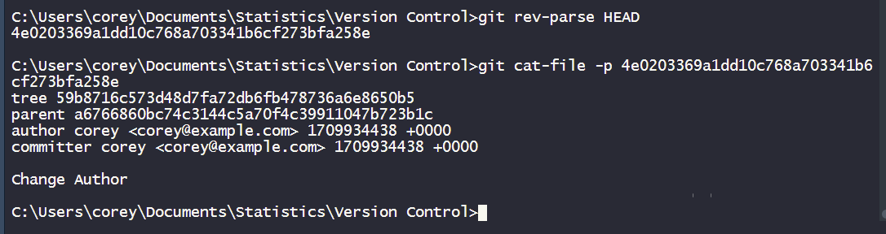
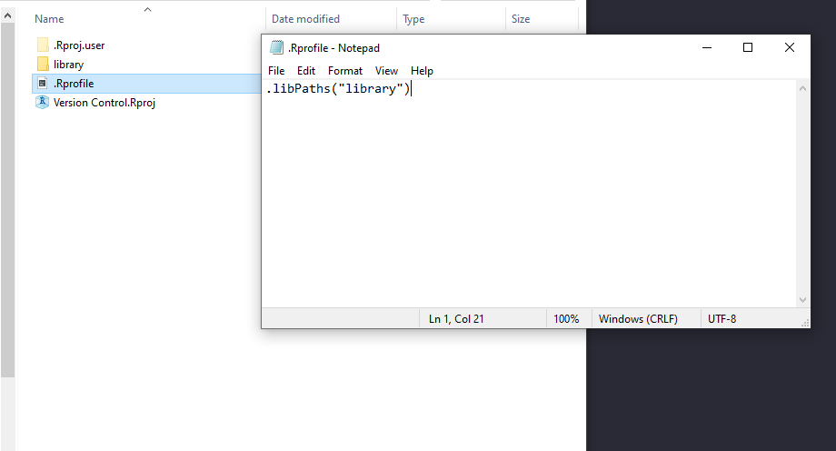
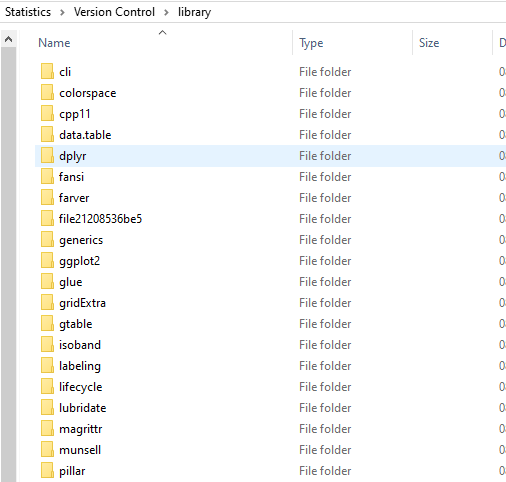

1 Introduction: The need for version control
A key requirement set out by regulators is to have a system which can modify, maintain, archive, retrieve and transmit clinical trial data. Furthermore, to ensure data integrity and reduce the risk of fraudulent activity, it is important to have an audit trail to document proof of events, procedures and that changes have been made by authorised users only. An audit trail allows for a time-stamped electronic record which can reconstruct a sequence of events. Showing the stages of modification and deletion of data. Now, even bodies such as the FDA do not seem to particularly care what software you conduct your work on as long as all your affairs are in order.
Whilst SAS is still used by many (and I really did try to like it but…), increasingly R is being implemented in the world of clinical trials. Its freely available, open-source nature means that it not only reduces operational costs but sees continuous developments for new packages and documentation as an expanding community of people create innovative ideas. However, where SAS has an advantage is in their proven statistical functions/software which makes version controlling slightly easier than open-sourced R.
2 Things you need to get started
3 Git
If you do not have it, install git.
3.1 Huh? Git, GitHub, Git Desktop, Git Bash and other GUI’s explained
Git: This is the actual version control program itself.
GitHub: A website where you can store your code and files, also known as a ‘repository’ or ‘repo’ for short. This can be a useful home for codes, where you can fork/clone repositories onto different machines easily as well as collaborate and create teams. A way of thinking about it is git creates a book. You can then place a copy of this book on a shelf in a library, aka GitHub.
Git Desktop: A graphical user interface (GUI) for git/github. It is more beginner friendly than your cmd counterpart and you can simply drag and drop repo’s to add it to the desktop
Git Bash: An interface with git functionality and unix commands. Unix shell is used in most linux distributions so if you’re using linux, using Git Bash might feel straight forward. It offers greater flexibility for more complicated procedures.
Other: Git Kraken, Fork, Sublime merge are different GUI tools with their advantages and disadvantages…and pricey but worth researching and considering.
3.2 Summary of basic Git Commands
3.3 More Detail:
3.3.1 Init
Git init creates a repository in the current working directory. It is used when you’re starting a project that is not currently using git. Each project will have a .git folder in the root directory and the project repository. Git will begin to track all files using a Secure Hash Algorithm (SHA) and those files/folders which you do not want tracked will exist in the .gitignore file.
In essence, you create an ‘empty’ book.
gitGraph commit id: "Initialise Project"
3.3.2 Add
Another eponymous function name. It is used for adding files. Since Git 2.0 there has been some changes:
git add -A # Stage all new, modified and deleted files
git add . # As of Git 2.0, git add . = git add -A
git add -u # Stage modified and deleted files
git add --ignore-removal # Stage new/modified filesgit add . will expand to the current directory whereas git add * triggers file globbing, expanding to all files and directories that do not start with a dot (I know…slightly confusing). Running git add . from a sub-folder will update the index for files in that folder and subfolders recursively whereas git add ./git add-A will add all files in the working tree.
Following the book analogy, I can think of it as saying ‘I should start to include some pages I have written in this book’.
3.3.3 Commit
Saves a snapshot of your repository. Git messages are a way to communicate the changes that have been made as well as why. You need to include sufficient information in your commit messages. There’s many passionate devs arguing the length of commit messages and despise the use of -m.
There’s the viewpoint of the need for massive messages as a sign of you’re not committing enough, it should be succinct so that people don’t just gloss over it. On the other hand, if you’re taking over a new project, come back from a long holiday or just generally made significant changes whether that is adding a new feature/fixing a bug and needs a sufficient explanation of what and why, you’ll want longer messages.
I lean towards advocating the longer, more detailed messages. I would rather be completely explicit and slightly overkill than to provide next to no detail.
There is a nice project for generating pretty changelogs here.
For a few files you can use:
git add file file2
git commit -m"Adding file and file2" # Specify message for commitOr for many:
git add .
git commit -m"Multiple changes"‘I’m content with what is written in the book for now, I’ll create a save point, logging what is done, signed with the date, time and author.’
gitGraph commit id: "Initialise" commit id: "Commit"
3.3.4 Push
git push is commonly used when you’re using GitHub. You’ll want to commit your changes and then push/upload files from your local repository to GitHub.
The book is looking pretty good, I’ll send the latest version to a librarian for safe keeping.
3.3.5 Clone
git clone quite literally creates a local duplicate with everything from some specified repository.
E.g. ‘I’ll ask the librarian for a copy of my book or get someone to send a copy from my study to my new location.’
3.3.6 Branch
If you do not want to risk impacting the main codebase, it can be a good idea to work from a branch if you are working on some new feature or bug. After working on a branch, you can then merge these changes back into main.
I think I’ll create a separate copy of the book to write some chapters and make edits. Later, I might merge the two copies.
gitGraph commit id: "Initialise" commit id: "Just" commit id: "Keep" commit id: "Committing" commit id: "one more..." branch feat checkout feat commit
3.3.7 Checkout
Here I commit on my branch ‘feat’ and then use checkout to go back to main. I can then create another branch ‘bug’ from main, do some commits, and switch back to main again. The checkout function allows you to swap between the different branches.
gitGraph commit id: "Initialise" commit id: "Just" commit id: "Keep" commit id: "Committing" commit id: "one more..." branch feat checkout feat commit commit checkout main commit branch bug checkout bug commit commit checkout main commit
I want to swap between the different copies of this book I am working on.
3.3.8 Restore
This is a mess, I need to start from my last saved version. I’ll contact the library to get the last version of the book they have.
gitGraph commit id: "Initialise" commit id: "Just" commit id: "Keep" commit id: "Committing" commit id: "one more..." branch feat checkout feat commit commit checkout main commit branch bug checkout bug commit commit
3.3.9 Merge
I want to incorporate my changes from this other book into my main book.
gitGraph commit id: "Initialise" commit id: "Just" commit id: "Keep" commit id: "Committing" commit id: "one more..." branch feat checkout feat commit commit checkout main commit branch bug checkout bug commit commit checkout main commit merge bug checkout feat commit
3.3.10 Fetch
I need to get my book with all branches, tags, commits, etc from the library into my study.
3.3.11 Pull
A combination of fetch and merge.
4 Using git in RStudio
First, make sure that you have version control enabled and that R can find git.
At the top of RStudio, go to Tools then global options. At the left-hand side towards the bottom there is Git/SVN. Click the tick-box ‘Enable version control interface for RStudio projects’. Under Git executable, make sure it has the correct location where git.exe is stored.
4.1 Initialising git repository through RStudio
4.2 Example of using git in RStudio
I have included below a small example using a few key commands from git:
git initinitialise a git repositorygit config user.namedefine the user name (you can also usegit config --localto see details)git config user.emaildefine emailgit add .add everything in the working directorygit commit -m"Text"git commit with messageTextgit logsee the log produced from git (You can see the author, date/time, commits, etc.)
4.3 How do I view user name / email / settings in git?
Global Settings and Details:
# Global level settings (including details of user name/email)
git config --listLocally/Repository Settings and Details:
# Local/Repository level settings (including details of user name/email)
git config --list --local 4.4 How do I configure user name / email in git?
# Change global user name
git config --global user.name "user_name"
# Change global user email
git config --global user.email "user@email.com"
# Change local user name
git config --local user.name "user_name"
# Change local user email
git config --local user.email "user@email.com"4.5 How do I see the number of commits per contributor for files?
- -s number of commits per contributor
- -n sort by number of commits descending
- – useful for commands such as log/checkout where you want to be clear whether you’re indicating a reference to a revision or a path
git shortlog -n -s -- folder # 
4.6 How do I get the hash and details of the current commit?
git rev-parse HEAD
git rev-parse --short HEAD # Short version
git cat-file -p # Followed by the hash
5 Setting up your R project and Libraries with git
5.1 Initialise
I should acknowledge, this is how to set up a project without using renv. For those unfamiliar with renv it is a package used to create reproducible environments. You can take various snapshots of your project library, updating/staging the, with the ability to roll-back. I will do another post for renv at a later date.
In RStudio, go to file, new project and create an R project file in the folder you wish to version control.
Now, add an empty folder called ‘library’. The idea is, instead of using the packages installed on the machine, we will be pointing to this library folder for all our packages. This will give us more control over each project and avoid the issue of if I update this package on the local machine, affecting all the projects and potentially breaking them (which is very incredibly frustrating).
To tell R to point to this library, create a new text file in the folder called ‘.Rprofile’. Within the text file add:
.libPaths("library")It should look something like this.

You may have to reload your Rproject for the profile to take effect in this next step. Next, install some packages. For example,
packages <-
c(
"magrittr",
"dplyr",
"tidyr",
"ggplot2",
"dplyr",
"lubridate",
"RODBC",
"data.table",
"stringr",
"grid",
"gridExtra"
)
if (length(packages[!(packages %in% installed.packages()[, "Package"])]))
install.packages(packages[!(packages %in% installed.packages()[, "Package"])]
)
# Load packages
#lapply(packages, library, character.only = TRUE)These packages should now be in the library folder like so:

To initialise git for enabling version control and adding files/commit, in the terminal in RStudio type:
git init # Initialise the project on the current working directory
git add * # Add all files in current working directory except those beginning with a . (dot)
# Optional configuration for user.name and email
git config --local user.name username
git config --local user.email username@snailmail.com
# Commit with message
git commit -m"Initial DSMB Statistical Report XXXX" #Change the text in quotes to whatever you like5.2 Subsequent staging
If you are producing a DSMB, TSC, etc report and you set up your folders to be called ‘MM YYYY’. On the next iteration of the report, copy the folder and changing the name of the folder. Delete the .git and R project files. Next, follow the previous steps but with a new commit message:
git init # Initialise the project on the current working directory
git add * # Add all files in current working directory except those beginning with a . (dot)
# Commit with message
git commit -m"Subsequent changes...DSMB Statistical Report XXXX" #Change the text in quotes to whatever you like